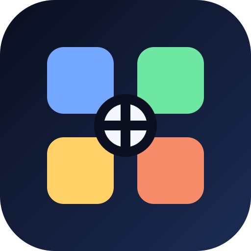

GIOSTACCHIO HUB
Installa il centro unico dei tuoi programmi come app separata dalla Lavagna.
Installa HUB
Apri HUB senza installare
Se il pulsante non apre l'installazione, usa i
⋮ tre puntini di Chrome
→
Installa app
o
Aggiungi a schermata Home
.